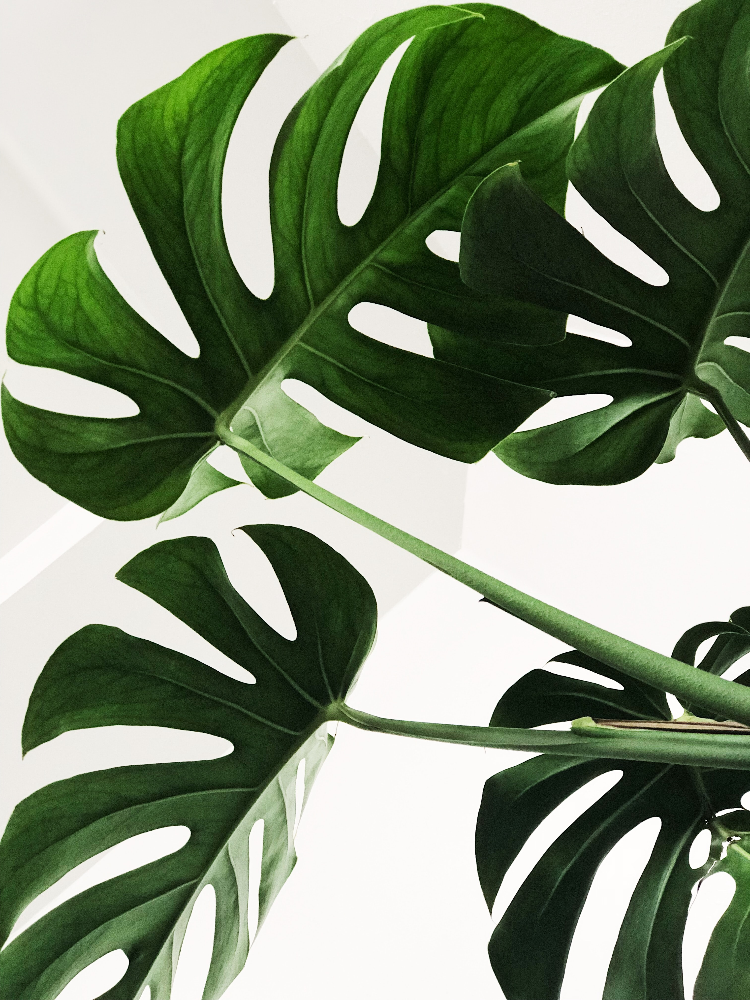

BAB Lingkungan
Apa yang aku pikirkan berlampau-lampau
Persoalan diri, jati diri dan harga diri .
Kini aku mulai merasakan perbedaan.
Perubahan.
Dulu aku bukan apa apa di kalangan teman santri.
Meski kini aku masih belum apa apa jua.
Feb 2, 2020
